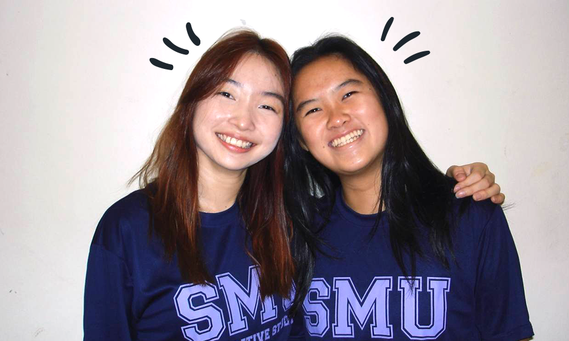

Our CIS faculty rock stars are a vibrant crew of more than two dozen respected scholar-teachers, including climate and urban experts, computer scientists, economists, geographers, historians, lawyers and political scientists, amongst others. You might already have crossed paths with a few of them at our engagement events. Click here to uncover more about our diverse CIS faculty team!
P.S. They can’t wait to meet you once term starts!
CIS Newsletter 2nd Instalment
24 June 2024
Welcome back, newsletter readers!
Dive into our latest instalment to hear from your future faculty advisors and find out what your seniors are up to this summer!
Fiona Williamson
Associate Dean (Undergraduate Education)Associate Professor of Environmental History
Co-Chair, CIS D3 Committee & CIS IM Committee

Ngoei Wen-Qing
Associate Dean (External Engagement)Associate Professor of History
Co-Chair, CIS D3 Committee
Joshua Luczak
Assistant Professor of Philosophy (Education)Events Co-Chair, CIS D3 Committee
Sayd Randle
Assistant Professor of Urban StudiesCIS D3 Committee
Ng Teng Kuan
Assistant Professor of Religious StudiesCIS D3 Committee
Park Haesoo
Assistant Professor of Science, Technology and Society (Education)CIS D3 Committee
Just a quick reminder for those that have yet to matriculate!
Click HERE for Matriculation Matters.
From internships to exotic adventures, and everything in between, this is how CIS students are making the most of their summer!
Carnella Tamara
CIS Year 1 Student, PSR ResidentCIS Residential Ambassador
Chia Hugh Vann
CIS Year 1 Student, PSR ResidentPSR Social Committee Member
Carnella Tamara
CIS Year 1 Student, PSR ResidentCIS Residential Ambassador
Chia Hugh Vann
CIS Year 1 Student, PSR ResidentPSR Social Committee Member
Chia Hugh Vann
CIS Year 1 Student, PSR ResidentPSR Social Committee Member
Carnella Tamara
CIS Year 1 Student, PSR ResidentCIS Residential Ambassador
Chia Hugh Vann
CIS Year 1 Student, PSR ResidentPSR Social Committee Member
inCISive is also hard at work planning your freshmen orientation!

Hello! I'm Yu Xuan, the Events and Operations Director at inCISive and the Camp Chair for Cosmic Odyssey. I'm responsible for organising inCISive's 2024 events, including the freshmen orientation that you'll be attending very soon! So....
🌟SUIT UP! 🦹🏻♂️ AND GET READY TO STEP INTO THE COSMIC ODYSSEY!!!🌟
Looking forward to seeing everyone there~
In the meantime, join us on the inCISive telegram groups and get the latest announcements and hear our chatter.
inCISive Megachat | inCISive Announcements
CONNECT WITH US!
Like this? Look out for the next instalment, in which we will share more about our CIS Professors (i.e. your future advisors!), as well as find out what your seniors are up to this summer!
Before you hit close on this newsletter, follow our channels for updated news and content.
If you missed the 1st newsletter, click here